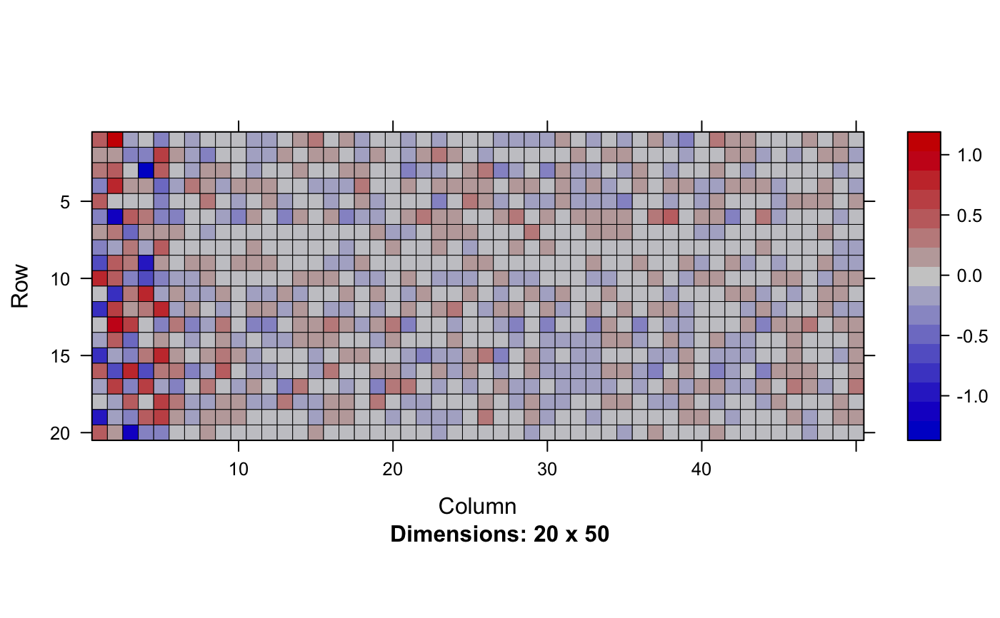
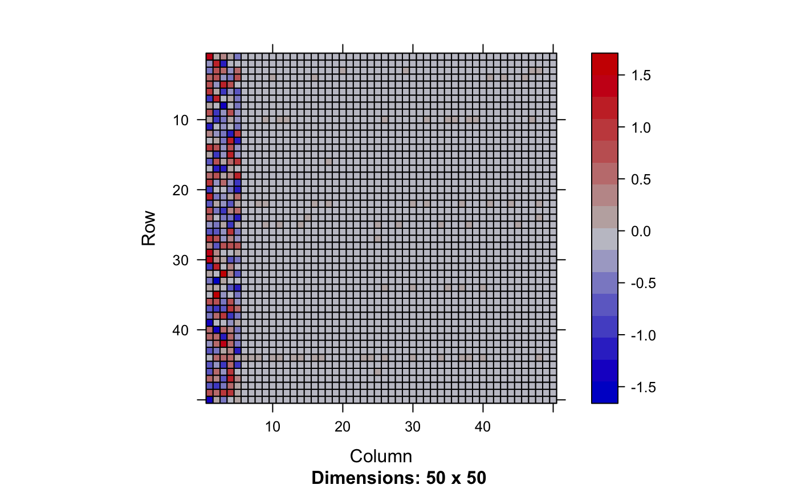
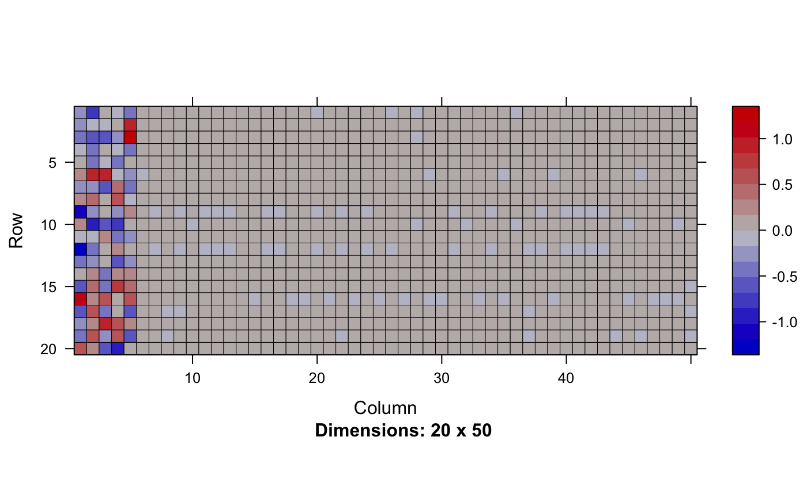
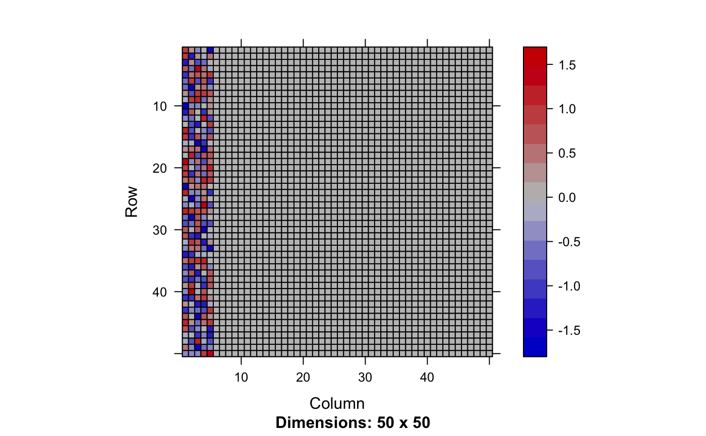

fit.zqtl.factorize.RdVariational inference of zQTL factorization to identify potential confounders across GWAS statistids
fit.zqtl.factorize(effect, effect.se, X)Marginal effect size matrix (SNP x trait)
Marginal effect size standard error matrix (SNP x trait)
Design matrix (reference Ind x SNP)
sample size of actual data (will ignore if n = 0)
A list of inference/optimization options.
Hyper parameter tuning (default: FALSE)
Rescale z-scores by standard deviation (default: FALSE)
Fixed value of tau
Fixed value of pi
Lower-bound of tau (default: -10)
Upper-bound of tau (default: -4)
Lower-bound of pi (default: -4)
Upper-bound of pi (default: -1)
Convergence criterion (default: 1e-4)
Maximum precision (default: 1000)
Update rate (default: 1e-2)
Update rate decay (default: 0)
SD of random jitter for mediation & factorization (default: 0.01)
Number of stochastic samples (default: 10)
Number of variational Bayes iterations (default: 2000)
Verbosity (default: TRUE)
Rank of the factored model (default: 1)
initialize by SVD (default: TRUE)
non-negativity in factored effect (default: TRUE)
mininum non-negativity weight (default: 0.01)
Printing interval (default: 10)
Number of threads during calculation (default: 1)
Error tolerance in Eigen decomposition (default: 0.01)
Regularization of Eigen decomposition (default: 0.0)
Standardize (default: TRUE)
Minimum level of SE (default: 1e-4)
Factorization model; 0 = ind x factor, 1 = eigen x factor (default: 0)
Random seed
a list of variational inference results.
param.left: parameters for the left factors
param.right: parameters for the right factors
llik: log-likelihood trace over the optimization
Our goal is to identify factorization of phenotype matrix: $$Y = U V$$ where \(Y\) was used in the calculation of the observed GWAS statsitics matrix \(Z \propto X^{\top}Y\).
library(Matrix)
#>
#> Attaching package: ‘Matrix’
#> The following objects are masked from ‘package:tidyr’:
#>
#> expand, pack, unpack
n = 500
p = 1000
m = 50
set.seed(1)
.rnorm <- function(a, b) matrix(rnorm(a * b), a, b)
X = .rnorm(n, p)
X0 = X[, -(1:(p/2)), drop = FALSE]
X1 = X[, (1:(p/2)), drop = FALSE]
Y1 = matrix(0, n, m)
Y = matrix(0, n, m)
h2 = 0.4
c.snps = sample(p / 2, 3)
## shared genetic variants
theta.left = .rnorm(3, 1)
theta.right = .rnorm(1, 3)
theta.shared = theta.left %*% theta.right
Y1[, 1:3] = Y1[, 1:3] + X[, c.snps, drop = FALSE] %*% theta.shared
v0 = var(as.numeric(Y1[, 1:3]))
Y1[, -(1:3)] = .rnorm(n, m - 3) * sqrt(v0)
v1 = apply(Y1, 2, var)
Y1 = Y1 + sweep(.rnorm(n, m), 2, c(sqrt(v1 * (1/h2 - 1))), `*`)
## introduce confounding factors
uu = .rnorm(n, 5)
vv = .rnorm(m, 5)
Y0 = uu %*% t(vv)
Y = Y1 + Y0
Y = scale(Y)
xy.beta = fast.cov(X, Y)
z.xy = fast.z.cov(X, Y)
xy.beta.se = xy.beta / (z.xy + 1e-4) + 1e-4
vb.opt = list(tol = 0, vbiter = 2000, jitter = 1e-1,
pi = -1, rate = 0.01, gammax = 1e3,
eigen.tol = 1e-1, k = m, right.nn = FALSE)
out = fit.zqtl.factorize(xy.beta, xy.beta.se, X, options = vb.opt)
image(Matrix(head(out$param.left$theta, 20)))

image(Matrix(out$param.right$theta))

y.hat = out$param.left$theta %*% t(out$param.right$theta)
plot(as.numeric(scale(y.hat)), as.numeric(scale(Y0)), pch = 19, cex = .3)
plot(as.numeric(scale(y.hat)), as.numeric(scale(Y1)), pch = 19, cex = .3)
plot(as.numeric(scale(y.hat)), as.numeric(scale(Y)), pch = 19, cex = .3)
## pure null
xy.beta = fast.cov(X0, scale(Y0))
z.xy = fast.z.cov(X0, scale(Y0))
xy.beta.se = xy.beta / (z.xy + 1e-4) + 1e-4
out = fit.zqtl.factorize(xy.beta, xy.beta.se, X0, options = vb.opt)
image(Matrix(head(out$param.left$theta, 20)))

image(Matrix(out$param.right$theta))

y.hat = out$param.left$theta %*% t(out$param.right$theta)
plot(as.numeric(scale(y.hat)), as.numeric(scale(Y0)), pch = 19, cex = .3)
plot(as.numeric(scale(y.hat)), as.numeric(scale(Y1)), pch = 19, cex = .3)
plot(as.numeric(scale(y.hat)), as.numeric(scale(Y)), pch = 19, cex = .3)